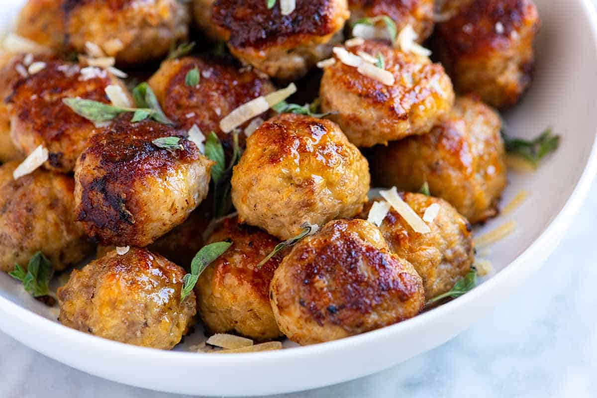

Turkey Meatball Stew

Description
This is our go-to meatballs recipe. It’s quick to make, calls on ingredients we always have on hand and the recipe guarantees juicy, tender and flavorful meatballs. The ground meat you use is up to you! This recipe will work with beef, pork, lamb, chicken, turkey or any other ground meat you have access to in making the meatball.
We cook meatballs a variety of ways in our own kitchen and don’t really think there is any best way to cook them.
Ingredients
- 2 pounds ground turkey 93% lean
- 1 cup bread crumbs or panko or rolled oats
- 2/3 cup onion minced
- 1/2 cup fresh parsley minced
- 2 large eggs
- 3 cloves garlic minced
- 2 teaspoons Worcestershire sauce
- 1/2 teaspoon dried basil
- 1/2 teaspoon dried oregano
- Salt and freshly ground black pepper
- 1/4 cup olive oil
Steps
- Preheat the oven to 375 degrees F (190 degrees C). Line a rimmed baking sheet with foil. Coat a wire rack with nonstick cooking spray, set on prepared baking sheet, and set aside.
- Combine ground turkey, bread crumbs, egg, parsley, Worcestershire sauce, garlic powder, Italian seasoning, onion powder, salt, and pepper in a large bowl. Using a 2-teaspoon cookie scoop, shape the mixture into 1-inch balls and place on the baking rack.
- Bake in the preheated oven until no longer pink in the center, about 12 minutes.
- Meanwhile, heat olive oil in a Dutch oven over medium heat. Add onion and celery and cook until softened, about 5 minutes. Add tomatoes, chicken broth, potatoes, carrots, peas, basil, and red pepper flakes; stir until well combined. Bring to a boil, reduce heat to medium-low, and simmer, uncovered, until potatoes and carrots are cooked and the broth has somewhat reduced, 20 to 25 minutes.
- Stir in meatballs and simmer until heated through, 5 to 7 minutes. Season stew with salt and pepper.